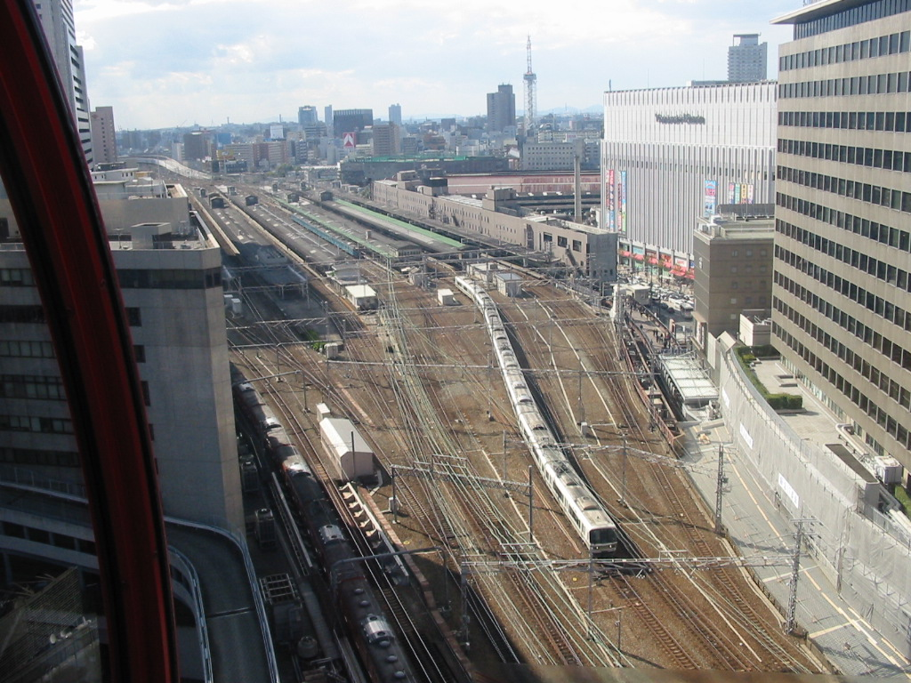
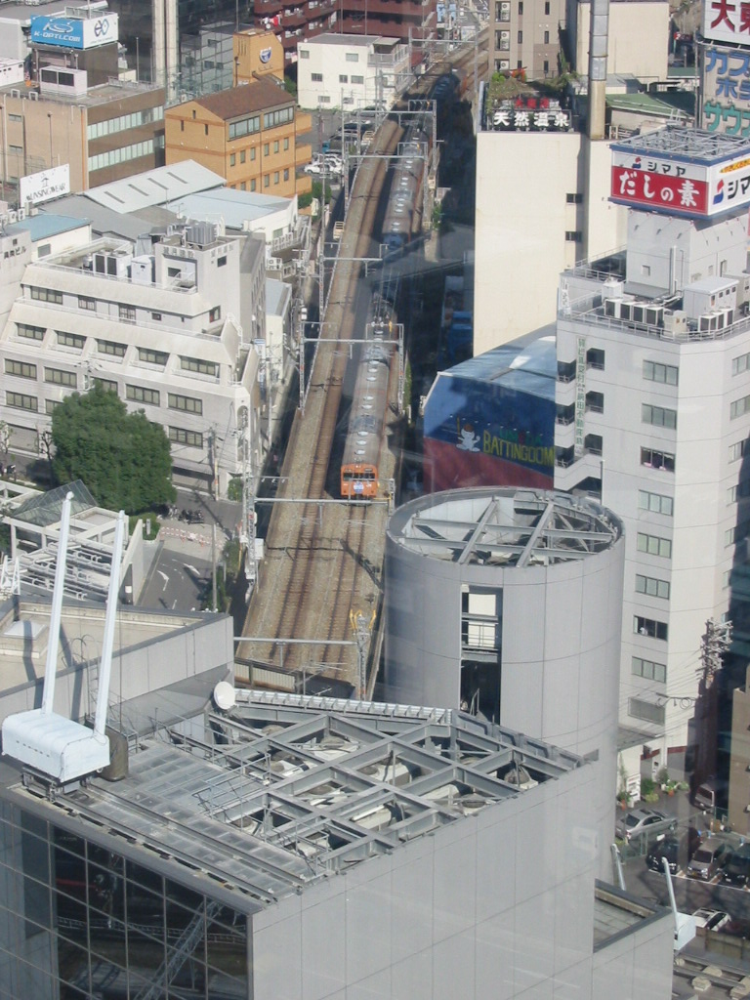

なんとかと煙は高いところが好き、ということで、鉄夫がＨＥＰ観覧車に乗りたがりました。
ＯＰＥＮ当時は長蛇の列だったが、２００２年当時ですでにスカスカだった。
彼氏彼女の間柄なら観覧車はラブラブドキドキ空間だが、
こちとら中年夫婦でっさかい「家見えるか！」「ホー！こんなんなんやー！」と
お互いが、外にカメラを向けまくりの観光空間でした。

鉄夫「ヨドバシとホームの間の茶色のビルは今はもう無いよなぁ。」

鉄夫「この角度からの写真珍しいんちゃう？しかも低やし。」
尼ヲタ＆北京のいってた「とにかく貴重な風景を撮って撮って！」の意味がジワジワわかってきました。
何気なく撮った風景にも、今はもう無いもの、無くなりつつあるものが写り込んでるものですなあ。。。
都島